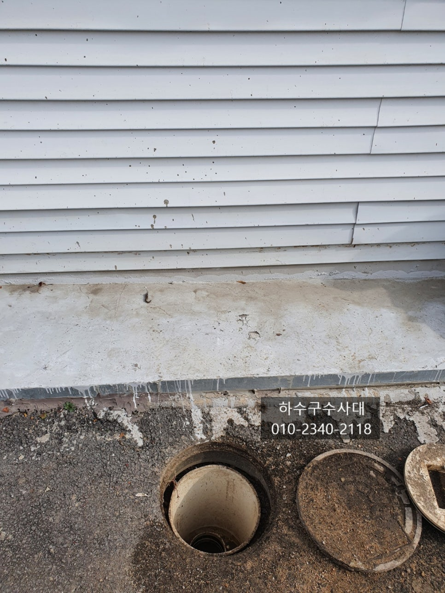
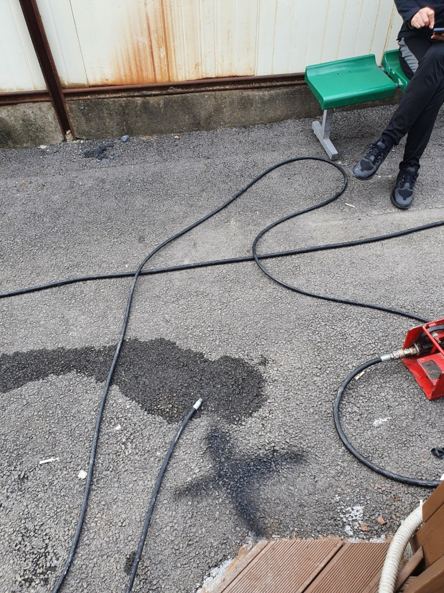
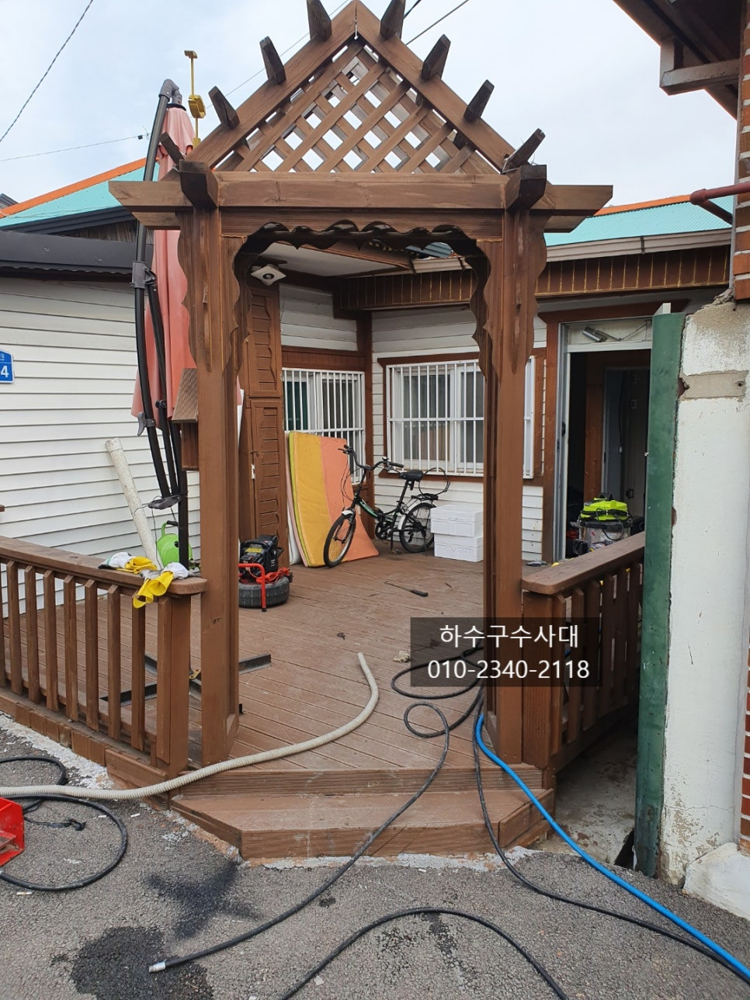
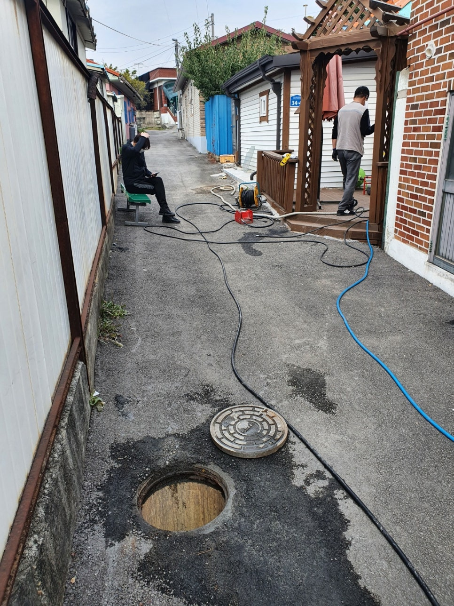
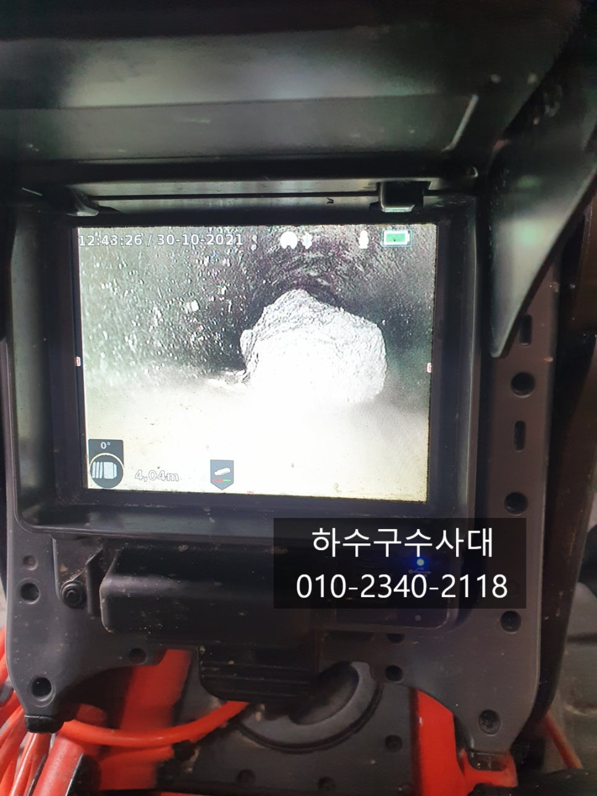
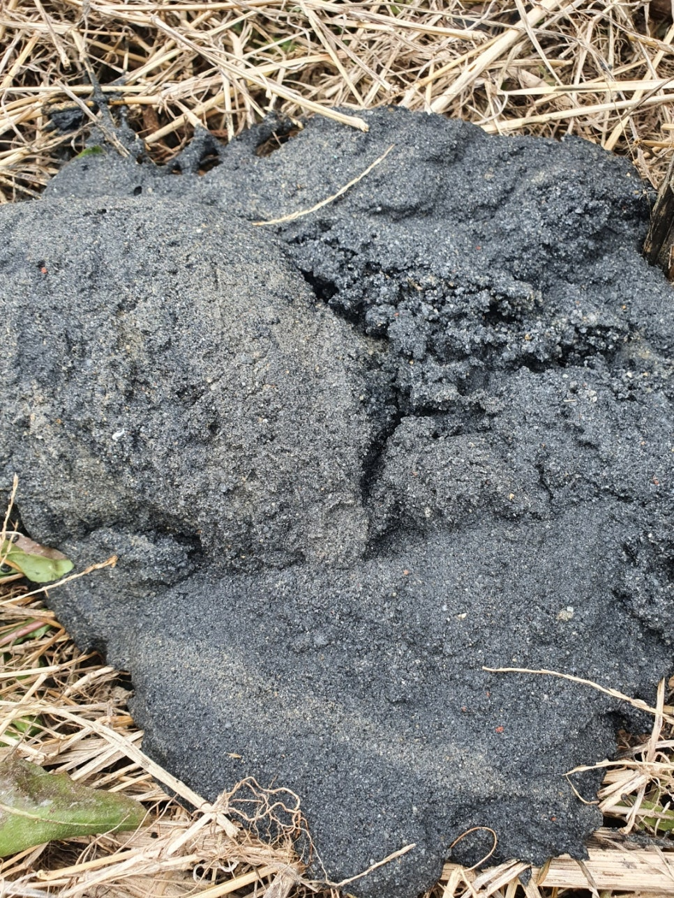
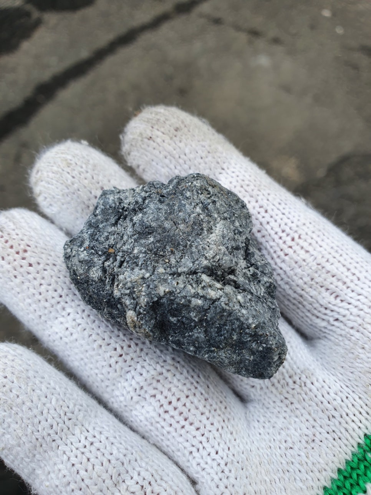

🏠 하수구배관공사 하수도배관교체 및 배관청소 관로탐지
서울 싱크대막힘 전문 시공 후기

📋 작업 개요
- 위치: 서울
- 서비스 유형: 싱크대막힘, 하수구막힘, 배관막힘, 맨홀막힘, 역류해결, 뚫는업체, 배관청소, 고압세척, 설비공사
- 작업 일시: 2021. 11. 2. 23:58
- 업체명: 하수구수사대 (010-5615-2118)
🔍 문제 상황
하수구배관공사 하수도배관교체 및 배관청소 관로탐지
안녕하세요
오늘은 싱크대와 욕실에서 물을 쓰면
세탁실로 역류하는 증상이 있어 방문한 현장인데요
무려 1년이상 방치하고 있어 겨울되기전에는
뚫어야겠다고 하시면서 연락을 주셨습니다.
단독주택으로 1층으로 된 구조인데 대부분
배관구조가 단순하지만 이곳은 특이하게
싱크대와욕실,세탁기 배관이 나오는 곳이 없었습니다.
사진에 맨홀처럼 보이는것이 오수받이인데
집집마다 하나씩 만들어 오수와 하수가 이곳을 통해
시관으로 나가게 됩니다.
하지만 이집은 오수는 나오지만 하수는 나오지않고
나올수있는 배관에 내시경카메라로 아무리봐도
흙과 폼스펀지로 막혀 있었어요.
따로 나가는 배관이 있을거라고 판단하고 고압세척으로
배관을 청소하면서 차근차근 찾아보기로 하였습니다.
고압세척장비로 세척을하면서 배관에서 흙과모래가
많이 나왔는데요 아마도 배관이 무너지거나
유실 됐을걸로 추정이 되는 시점이였습니다.
하수구수사대
010-2340-2118
고압세척으로 배관을 깨끗히 한뒤

🔎 원인 분석
💡 전문가 진단: 하수구수사대010-2340-2118
내시경카메라를 통해 배관을 들여다 보니
돌맹이들이 여러개 나오는것도 확인이 되고
석션으로 빼낸 이물질이 흙과모래, 돌들이 많아
배관에 문제가 있을거라고 확신을 하게 되었습니다.
정상적인 배관에는 이렇게 많은 흙과모래, 돌들이
들어갈수기 없습니다.
내시경카메라를 통해 배관구조를 그려봤는데
오수받이 높이와 세탁실에서 나가는 배관높이가
틀리기때문에 아무리 봐도 나가는 배관이 보이지
않았습니다. 단지 배관이 더이상 들어가지 않는곳이
있었는데 그곳을 관로탐지를하여 배관공사를
진행하기로 하였습니다.
관로탐지기를 통해 미리 마킹해놓은 곳을
파보기로 하였는데요 땅속일은 아무도 모르기때문에
항상 안전에 유의하여 작업을 진행해야합니다.
다행히 이곳은 골목길로 차가 다니지 않는곳이라
작업진행에 큰 무리는 없었습니다.
땅을 관로탐지한 깊이에 맞게 파고난후 삽으로
조금더 파들어가니 물이 흘러나오는 것이 확인이
되었습니다.
배관주변을 파보니 배관이 끊겨있고 배관이 노후되어
아마 쓰지않는 배관이라고 생각하여 예전에 아스팔트 공사를
하면서 잘라 버린것으로 판단이 되었습니다.

🔧 작업 과정
잘라진 배관을 이어 물이 배수가 되게끔 연결해
주어야 하는데요 다행히 가까운곳에 연결할수 있는
배관이 있어 그곳까지 연장하여 공사를 진행하기로 하였습니다.
배관에 아직 모래와 돌들이 남아있어
빼내는 세척작업을 진행한뒤 배관을
연결하기로 하였습니다.
배관을 세척한뒤 깨끗해졌는지 확인해 주는것도
중요한데요 배관을 연장하기전에 해주는것이
작업도 편하고 깨끗하기 때문입니다.
배관에 기름기와 흙,모래,돌들을 모두 제거했으니
이제 배관을 연장하는일이 남아있습니다.
배관을 연장할때는 구배를 잘주는것이 굉장히 중요한데요
물이 고여있는 구간없이 잘 흘러나간다면
기름슬러지가 쌓이는 일이 없기 때문입니다^^
배관을 연장하는 작업을 진행하였는데요
기존배관 상태가 좋지않아 내부와 외부를
보강하여 배관이 유실되지않게 보강작업도
진행하게 되었습니다. 시작부터 배관구배를
잘 잡아나는것이 중요하기 때문에 레벨체크를
잘해줘야합니다.
다행히 내리막경사가 있는 골목이라
구배를 충분히 줄수 있었는데요
물이 시냇물 내려오듯이 정체하는구간없이
잘 내려올수 설치 되었습니다.
역류하던 세탁실에서 내시경카메라로
확인을 해보았는데요
배관도 깨끗하게 청소가 잘되었고
연장한 배관도 구배가 좋아 물이 고여있는곳이 없고
잘 흘러나가는 것을 확인하였습니다.
그동안 싱크대와 욕실물이 세탁실로 넘쳐
악취도 많이나고 곰팡이도 생겨
불편하셨을텐데 이제야 원인을 파악하고
완벽하게 처리되어 다행입니다^^
막힘증상과 역류증상이 있다면 대부분 장비로
뚫는 작업을 하면 해결이 되지만
이처럼 배관이 무너진곳은 아무리 뚫어도


✅ 작업 완료
뚫리지가 않습니다. 원인을 빨리 파악하고
해결을 하는것이 진정한 능력이고 실력이겠죠^^
고객님께서도 그동안 막혀있는줄만 알았지
배관에 끊어졌을거라고는 생각도 하지 못했다고
하시면서 처리가 잘 되어 만족해 하셨습니다^^
배관이 파손되어 있지만 않다면 대부분
최신형 장비로 해결이 됩니다.
답답한 하수구막힘현장이 있으시다면
"하수구수사대"에 연락주십시요.
서울,경기,인천 어디든 달려가겠습니다.




⚠️ 주방 싱크대 배관 막힘 예방 수칙
- ✅ 기름기가 묻은 식기나 프라이팬은 설거지 전 키친타올로 반드시 기름때를 닦아내세요.
- ✅ 주기적으로 싱크대 개수대에 뜨거운 물을 가득 받아 한 번에 내려 배관 내부 기름을 씻어내세요.
- ✅ 배수구 거름망을 미세한 필터로 사용하시고 음식물 찌꺼기가 틈으로 새어 들지 않게 관리하세요.
- ✅ 베이킹소다와 식초를 뜨거운 물과 함께 일주일에 한 번씩 부어주면 배관 살균과 막힘 예방에 좋습니다.
💡 핵심 정리
- 확실한 장비 작업(내시경 점검 및 샤프트 스케일링)으로 원인을 뿌리 뽑습니다.
- 작업 후 1년 이내에 동일한 부위 재발 시 100% 무상 A/S 서비스를 보장합니다.
- 서울 · 경기 · 인천 전 지역에 24시간 언제든 긴급 출동할 수 있도록 항시 대기 중입니다.
❓ 자주 묻는 질문 (FAQ)
🚨 서울 싱크대막힘 문제로 고민이신가요?
정확한 원인 진단과 확실한 시공으로 재발 없는 해결을 약속드립니다.
24시간 긴급 출동 | 서울 · 경기 · 인천 전지역 | 1년 내 재발 시 무상 A/S